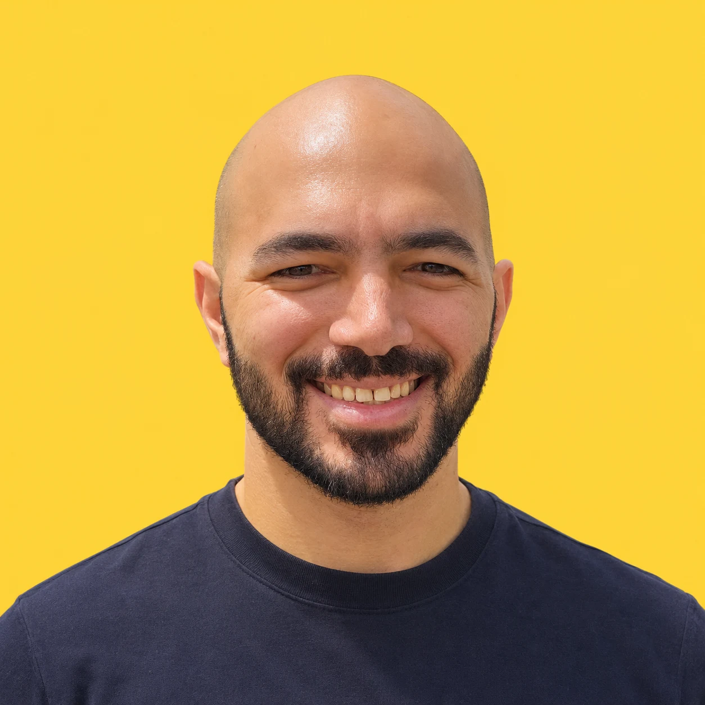

The Unfinished 30
30 days. One working prototype a day. Free.
I started with around 100 small tools I’d built with AI for work and everyday life. I’m opening them up one day at a time so you can try them, use them and adapt them.
The prototypes
Start with the latest release or browse earlier days. Each card tells you what the tool does and what’s still unfinished.
The 30 days
Pick a published day to jump to its card. Releases are scheduled for 8 am Bangkok time.
Latest releasePublishedUnreleased

Hi, I'm Salah.
I lead a learning efficiency and coordination team in Bangkok, and I'm the person colleagues call when they want AI to take a task off their plate. I don't code for a living. I build with AI, test on real problems, and share what works and what breaks.
If one of these prototypes could help your team, or you want something like it built for you, write to me on LinkedIn.
Questions
Is it really free?
Yes. Every prototype is free to use. Some need your own AI API key (Claude, ChatGPT, Gemini or Grok) for their AI features: usage charges depend on the provider.
Why "unfinished"?
Because they are. They work, but they haven't had the hosting, security reviews, marketing and polish a real product needs. I'd rather put them in your hands now than keep polishing for months.
What happens to my data?
Each prototype explains how it handles your data. Many features run in your browser. AI features may send text to the selected provider or through a server endpoint.
Can I rebuild one and use it at work?
The source is on GitHub. Contact me on LinkedIn about adapting a prototype for your team.
Can you build one for my team?
Possibly. Tell me the problem on LinkedIn and I'll tell you honestly if it's a fit.